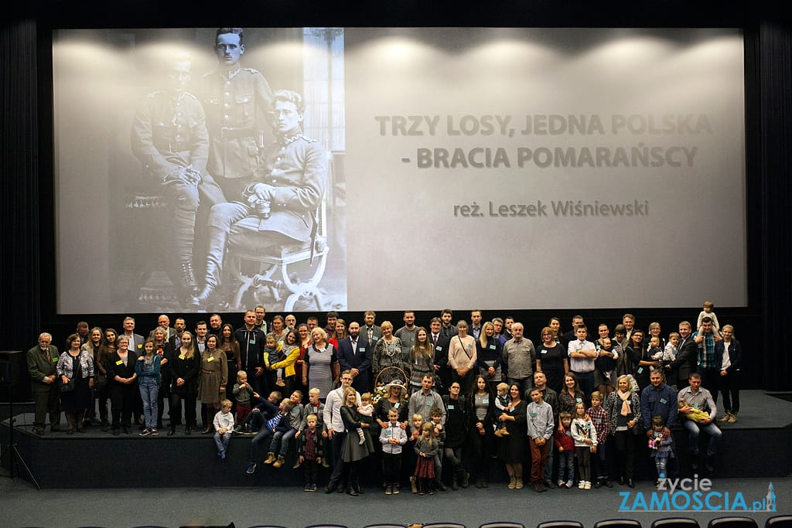

Strona poświęcona Braciom Pomarańskim
Stefan, Zygmunt i Józef Pomarańscy. Ich losy są jakże typowe dla owego fenomenu pokolenia wskrzesicieli Niepodległej. Służba w Legionach i Polskiej Organizacji Wojskowej, wojna polsko bolszewicka, praca i działalność społeczna w międzywojniu, Wrzesień 1939 i konspiracja, tragiczny koniec w hitlerowskich kacetach.
Józef Piłsudski mawiał o nich moi ulubieni żołnierze i zapewne czekała ich świetlana wojskowa przyszłość w II Rzeczpospolitej, gdyby nie zdjęli mundurów i nie postanowili służyć Polsce codzienną sumienną pracą, której tak wiele było w młodej ojczyźnie.
10 listopada 2018 w Zamościu odbyła się uroczysta projekcja filmu "Trzy losy, jedna Polska", w którym reżyszer Leszek Wiśniewski opowiedział historię braci Pomarańskich.
W uroczystej projekcji w Zamościu uczestniczyli potomkowie braci Pomarańskich, którzy nie ukrywali radości i wzruszenia, że pamięć o ich przodkach jest pielęgnowana.
Projekcja filmu stała się swoistym zjazdem rodziny Pomarańskich.